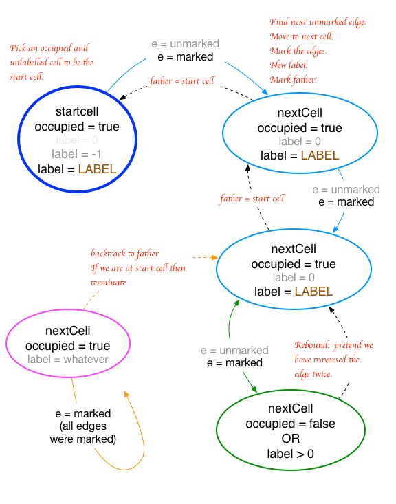
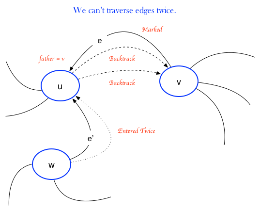
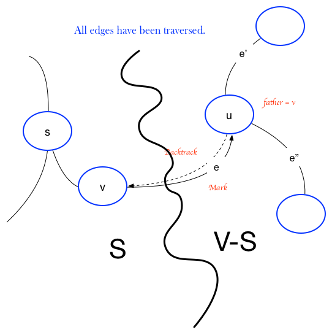

Introduction
Life is played on a two dimensional game board which is partitioned into cells. Cells may be occupied with counters. The default (Conway) rules are:
- 1. BIRTH. Each empty cell adjacent to exactly 3 neighbors will have a birth in the next generation. Otherwise, the cell remains empty.
- 2. DEATH. Each occupied cell with exactly 0 or 1 neighbors dies of isolation and loneliness. Each occupied cell with 4 or more neighbors dies of overpopulation.
- 3. SURVIVAL. Each occupied cell with exactly 2 or 3 neighbors survives to the next generation.
The HiLife variant has the additional stipulation that 6 neighbors also give a birth in the next generation. In this set of rules there is an object called the replicator.
All births and deaths occur simultaneously. Applying all rules to an entire board creates a new generation. Ultimately, the society dies out, reaches some steady state (constant or oscillating).
The ideal game board is infinite. For this program, we wrap around at the boundaries of the board, so topologically, we play on a torus.
Currently, the game board is set to to a fixed size of 200 x 200 cells. This value is adjustable in the header file winlife.h
The game board wraps around the left edge to the right edge and the top edge to the bottom edge. Topologically, it is a torus.
.LIF File Format
There are a few life file formats.
Alan Hensel's writers.doc file for Life 1.05
The first line of a .LIF file always identifies the kind of format it uses, for compatibility purposes. The standard is:
#Life 1.05
where 1.05 is the current format version number. A lower number is acceptable, and a higher number means that something may be outside these specifications. 1.05 is the latest.
The "#Life" line is followed by optional description lines, which begin with "#D" and are followed by no more than 78 characters of text. Leading and trailing spaces are ignored, so the following two "#D" lines are equivalent:
#D This is a Description line
#D This is a Description line
There should be no more than 22 "#D" lines in a .LIF file.
Next comes an optional rule specification. If no rules are specified, then the pattern will run with whatever rules the Life program is currently set to. The patterns in the collection here enforce "Normal" Conway rules using the "#N" specifier. Alternate rules use "#R" ("#N" is exactly the same as "#R 23/3").
Rules are encoded as Survival/Birth, each list being a string of digits representing neighbor counts. Since there are exactly eight possible neighbors in a Conway-like rule, there is no need to separate the digits, and "9" is prohibited in both lists.
For example,
#R 125/36
means that the pattern should be run in a universe where 1, 2, or 5 neighbors are necessary for a cell's survival, and 3 or 6 neighbors allows a cell to come alive.
Next come the cell blocks. Each cell block begins with a "#P" line, followed by "x y" coordinates of the upper-left hand corner of the block, assuming that 0 0 is the center of the current window to the Life universe.
This is followed by lines that draw out the pattern in a visual way, using the "." and "*" characters (off, on). Each line must be between 1 and 80 characters wide, inclusive; therefore, a blank line is represented by a single dot, whereas any other line may truncate all dots to the right of the last "*". There is no limit to the number of lines in a cell block.
Any line of zero length (just another carriage return) is completely ignored. Carriage returns are MSDOS-style (both 10 and 13).
About Xlife compatibility: Xlife recognizes the symbol "#C" for a comment, instead of "#D". The default extension is ".life" instead of ".LIF". Wlife (a port of Xlife for Microsoft Windows) does not have these compatibility problems.
Finding Connected Components
Introduction
To find clusters of counters, we adapt Tarjan's depth first search graph traversal algorithm for finding the connected components of a graph.
We treat the cells as 8-connected nodes in a graph, where only occupied cells have edge links, i.e. we traverse only from one occupied cell to its occupied neighbor.
The algorithm is from the book Graph Algorithms by Shimon Even.
Pseudocode
for cell in GameBoard
cell.label = cell.edge = cell.father = 0 Clear all cell's labels, edges and fathers.
for cell in GameBoard
if startcell.occupied and startcell.label = 0 Find next occupied unlabelled cell.
label = CreateNewLabel()
DepthFirstTraversal( startcell, label )
define DepthFirstTraversal( startcell, startlabel )
cell = startcell
cell.label = -1 Label this cell with the starting label.
forever
edge = FindNextUnmarkedEdge( cell )
if (there exists an unmarked edge e)
nextCell = nextCell( cell, edge ) Follow edge to next cell.
markEdges( cell, nextCell ) Mark edges between cells.
if (nextCell.occupied and nextCell.label = 0)
nextCell.father = cell Cell was entered for the first time. Record the father.
cell.label = startlabel Label the cell
cell = nextCell Step to next cell.
else New cell was either already labelled or unoccupied.
Pretend we've traversed the edge twice.
else All edges were marked.
if (cell.label = -1) Back at the starting cell.
break
cell = cell.father Backtrack along the father edge.

Proof of Correctness
Can't traverse edges twice in the same direction.

We can't traverse an edge twice in a marked direction because the algorithm won't permit it. So we must show that we can't traverse an edge twice in the backtrack direction.
Assume to the contrary that $e$ is the first edge traversed twice in the same direction, from $u \rightarrow v$ We must have marked all edges of $u$, else we wouldn't be backtracking out of it now along $e$.
Now $u \neq s$, the start vertex because $s$ has no father vertex.
Now what about an edge $e' \ne e$ incident on $u$? $e'$ is not a backtrack edge since there can be only one father.
Suppose $e'$ is unmarked. We either marked it upon leaving $u$, or we entered $u$ by it, marking it and then left along it again since $u \ne $s and $s$ is already labelled.
After $e'$ is marked, we cannot leave $u$ by it.
Thus we leave $u$ $d(u) + 1$ times, once along each of the other marked edges $e'$, and twice along $e$.
Thus we must have entered $d(u) + 1$ times, but then some other edge $e'$ must have been entered twice, contradicting our assumption. $\blacksquare$
The algorithm always terminates.
We either mark an edge $e$ or backtrack along it. From above, once we've done both to edge $e$ any further traversals are impossible. Thus the number of edges we can traverse decreases to zero eventually. $\blacksquare$
We must terminate in the starting vertex $s$.
So we must terminate from above. But we can't terminate in any node $u \neq s$. The algorithm would either force us to exit along an unmarked edge or backtrack out of $u$ to its father. And only the start node $s$ has no father. So we must terminate in $s$. $\blacksquare$
The start vertex $s$, has all its edges traversed once in each direction.
Upon termination in s, all outward edges were marked or else the algorithm would make us leave again. We started in $s$ and ended in $s$ so the number of entrances and exits must be the same. But since we can't traverse the same edge twice in the same direction, we must have traversed each edge once in each direction. $\blacksquare$
Upon termination, we've traversed all edges in the graph once in each direction.

Let $S = \text{ vertices whose edges were traversed once in each direction }$. This contains the starting vertex $s$ at least.
Then $V-S = \text{ remaining vertices whose edges haven't been traversed once in each direction}$. If this is empty, we're done, so assume it isn't empty.
Let $e$ be the first edge traversed from node $v \in S$ to $u \in V-S$. Then $father( u ) = v$. Since $e$ connects to $v \in S$ this edge $e$ must have been traversed once in each direction. But then all other edges $e'$ and $e''$, etc. must have been marked already, since only then can we backtrack exit along $e$. So we must have left $u$ $d(u)$ times. But $u \ne s$, so we must have entered $u$ $d(u)$ times. Thus all edges of $u$ must have been traversed once in each direction, making $u \in S$, a contradiction. $\blacksquare$
More Information
See Mathematical Games, SCIENTIFIC AMERICAN, Vol. 223, No. 4, October 1970, pgs. 120-123 for an early description of the game and its origins and Conway's Game of Life Wiki. for more information.